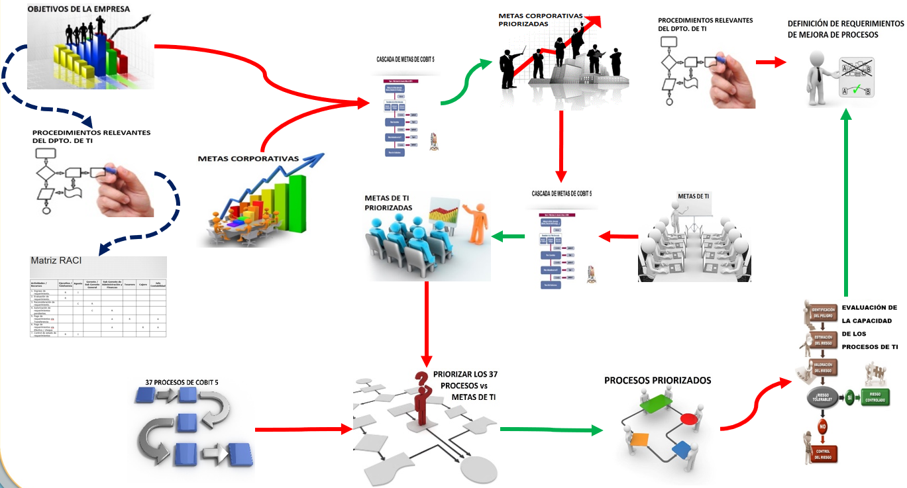

Pasos relevantes para la implementación

- Identificar los objetivos relevantes de la empresa.
- Identificar los procedimientos relevantes del departamento de TI.
- Identificar al personal responsables de los recursos y actividades con la matriz RACI.
- Aplicar cascada de metas a: Los objetivos relevantes de la empresa y a las metas corporativas propuestas por COBIT 5. Como resultado se obtendrá: Metas corporativas priorizadas.
- Aplicar cascada de metas a: Las metas corporativas priorizadas y a la metas de TI propuestas por COBIT 5. Como resultado se obtendrá: Metas de TI priorizadas.
- Aplicar cascada de metas a: Las metas de TI priorizadas y a los 37 procesos que propone COBIT 5 dentro de sus buenas prácticas. Como resultado se obtendrá: Un conjunto de procesos priorizados.
- Realizar una evaluación de la capacidad de todo el conjunto de procesos priorizados utilizando la metodología PAM que propone COBIT 5.
- Finalmente relacionar el conjunto de procesos priorizados con los procesos relevantes de TI. Como resultado se obtendrá una definición de requerimientos de mejora de procesos.